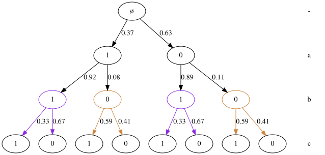
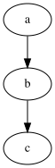
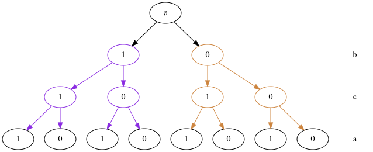
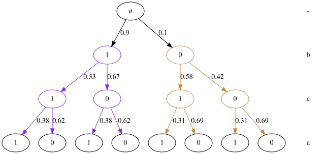
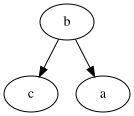

Learning a CStree
This notebook shows how to learn a CStree from observational data using an exhaustive search procedure.
[9]:
import numpy as np
import networkx as nx
import cslearn.cstree as ct
import cslearn.stage as st
import cslearn.learning as ctl
import cslearn.scoring as sc
%load_ext autoreload
%autoreload 2
The autoreload extension is already loaded. To reload it, use:
%reload_ext autoreload
Create a CStree
We first create a CStree which we know can be represented by a single DAG, shown below. We sample the stage probabilities from the Beta distribution with total pseudo counts 1.
[10]:
np.random.seed(5)
tree = ct.CStree([2] * 3, labels=["a", "b", "c"])
tree.update_stages(
{
0: [{"context": {0: 0}}, {"context": {0: 1}}],
1: [{"context": {1: 0}}, {"context": {1: 1}}],
}
)
tree.sample_stage_parameters(alpha=1.0)
tree.plot(full=True)
[10]:

[11]:
true_adags = tree.to_minimal_context_agraphs()
print("Number of DAGs:", len(true_adags))
print("Context:", list(true_adags.keys())[0])
list(true_adags.values())[0]
Number of DAGs: 1
Context: None
[11]:

Draw samples
We draw 10000 samples from this CStree.
[12]:
df = tree.sample(10000)
Calculate score tables
The structure learning (learning of CStree) uses pre-calculated scores. We restrict the number of variables in each context to be at most 2 and use the BDeu score with pseudo count 1. By letting poss_cvars=None, the possible context variables for a variable are unrestricted.
[13]:
score_table, context_scores, _ = sc.order_score_tables(
df, max_cvars=2, poss_cvars=None, alpha_tot=1.0, method="BDeu"
)
Context score tables: 100%|██████████| 3/3 [00:00<00:00, 160.33it/s]
Creating #stagings tables: 100%|██████████| 3/3 [00:00<00:00, 2533.81it/s]
Order score tables: 100%|██████████| 3/3 [00:00<00:00, 2697.88it/s]
The dict score_table contains the order score tables and context_scores, the scores for every context of every variable.
Find the optimal order by exhaustive search
We first find the optimal order using an exhaustive search.
[14]:
optord, score = ctl._find_optimal_order(score_table)
print("optimal order: {}, score {}".format(optord, score))
optimal order: ['b', 'c', 'a'], score -16332.559328979401
Find the optimal CStree (staging of each level) of the best order
Given the optimal order, we find the optomial CStree consistent with this order.
[15]:
opttree = ctl._optimal_cstree_given_order(optord, context_scores)
We plot the tree before estimating the parameters.
[16]:
opttree.plot(full=True)
[16]:

Estimate the parameters
Estimate the stage parameters using the BDeu prior with a total pseudo count per level of 1.
[20]:
opttree.estimate_stage_parameters(df, alpha_tot=1.0, method="BDeu")
opttree.plot(full=True)
[20]:

Plot the minimal context DAGs
[18]:
opt_adags = opttree.to_minimal_context_agraphs()
print("Number of DAGs:", len(opt_adags))
print("Context:", list(opt_adags.keys())[0])
list(opt_adags.values())[0]
Number of DAGs: 1
Context: None
[18]:

Note that this has the same CSI/CI statement as the original DAG representation.